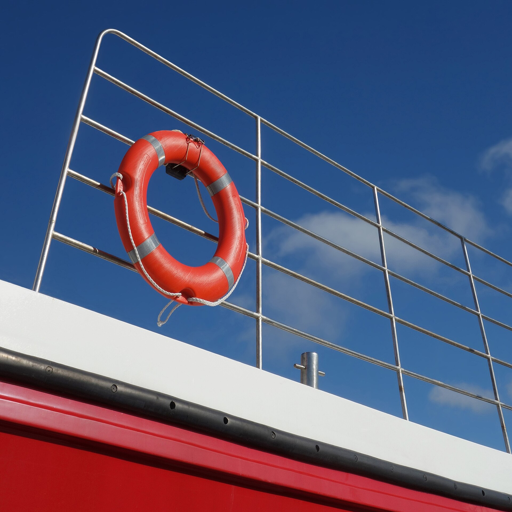
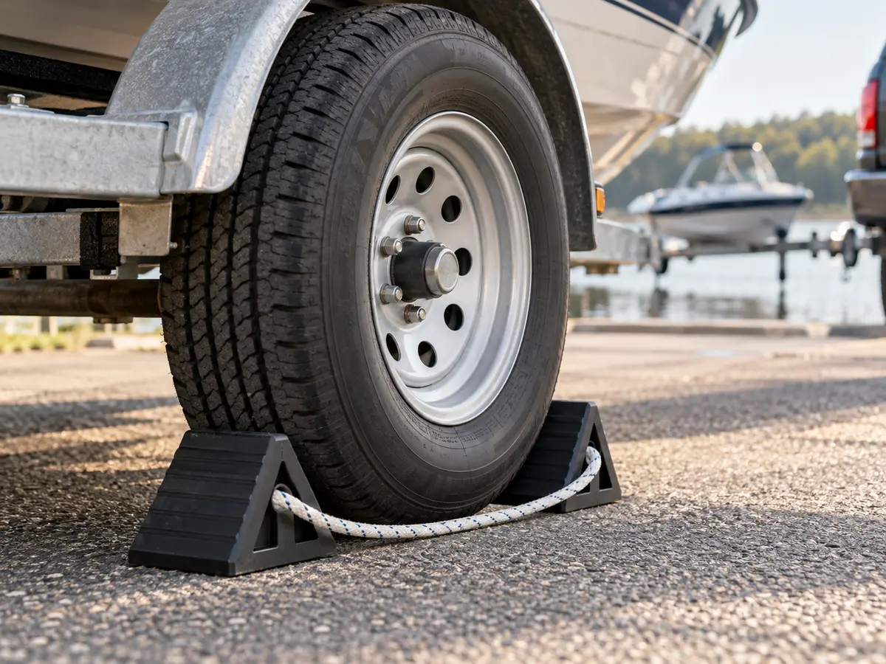
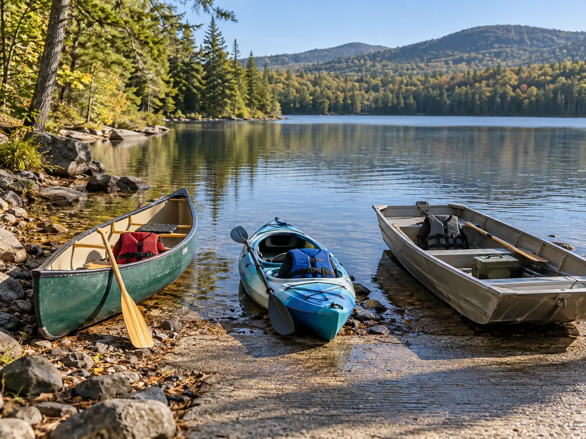
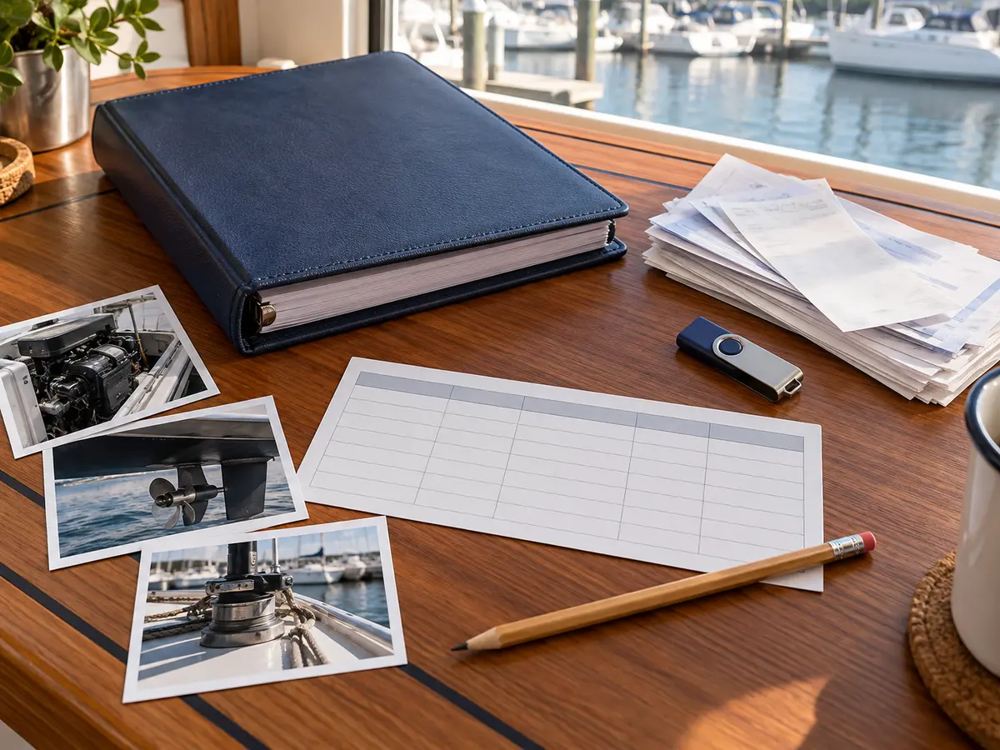

Live the Water.
Discover remarkable waterways, trusted gear, unforgettable weekends and the details that make every day on the water better.
Go somewhere worth remembering.
Three memorable ways to spend more time on the water.


Gear that earns its place aboard.
Real products, real boating context, and no cartoon placeholders.

Throwable Flotation
Choose a compliant cushion, ring or horseshoe—and know what a throw bag cannot replace.
Compare the right types →
Best Chartplotters
Marine navigation electronics for inland lakes, coastal cruising and fishing.
See the guide →
Boat Coolers
Hard-use coolers for the boat, beach and long weekends.
Compare picks →
Life Jackets
Properly rated flotation options for children and adults.
View recommendations →Know before you launch.
Wind, storms, water temperature, sunrise, sunset and the conditions that matter on the water.
Open Marine Weather →Hold the trailer. Respect the season. Keep the evidence.
Three unrelated decisions with one useful habit: prove the equipment fit, confirm the official access boundary and leave a record another person can audit.

Buy the Chock for the Tire and Surface
Separate routine parking from service support, then keep a traceable size and placement rule.
Build the fit record →
Lewey Lake Is Seasonal and Shallow
Use the 15-rig hard-surface launch only in the confirmed campground season—and bring the genuinely small boat.
Plan the proof loop →
Turn Maintenance Claims Into Evidence
Tie identity, manual, work, materials, performer and proof into a record another person can audit.
Build the evidence file →Also recent: mooring-whip fit, Bowman Lake by cartop craft, and the navigation-app failure drill. Previous practical decisions remain easy to reach: family rain layers, Meacham Lake's two access jobs, and a three-generation boat day.
Recent practical guides
Monitor the Tires, Keep the Gauge, Moreau Lake: Pick the Paddle Lane, Make a Boarding Boring, Choose the Hose After the Route, Lake Bonaparte: Earn the Longer Loop, Name the Qualified Operator, Will It Reach From Your Seat?, Prepare for the Free Safety Check, Agree the Brief Ashore, Read the Dial. Prove the Location., Keep Maritime History on the Plan, A Blank Map Is Not Clearance, Choose the Mount Before the Holder, Lake Colby: Power and Carry-In First, Photograph. Demonstrate. Agree., Recovery First. Then Pick the Platform., Eleven Spaces Change the Day, Sell the Boat, Not Your Data, Guide the Approach—Never Carry the Hull, Waneta or Lamoka: Pick One First, Dry, Inspect, Separate, Release, Guard the Contact—Then Inspect the Line, Onoville: Eight Gates Before the Ramp, Turn a Forecast Into Six Decisions, Match Grease, Hose and Coupler, Indian Lake: Public Launch, First-Snow Gate, Five Signals. One Absolute Stop Rule., Route-Test the Cart Before You Buy, Fish Creek: Launch Open, Campground Closed, Three Knots. Twenty Minutes. Adult Check., Match the Label to the System, Rent There. Do Not Tow a Kayak., Give Wildlife the Exit, Service the Hub. Check the Pattern., Choose the Right Hinckley Access, Inspect the Cover From the Ground, EVA Foam, Woven Vinyl or Carpet?, Launch Stillwater With Margin, Refit the Life Jacket Over Layers, Cutter, Shears or Blunt-Tip Knife?, Choose Among Four Reservoir Launches, Set the Turn Time With Five Clocks, Choose the Sorbent Form Before the Spill, Choose the Canadice Access First, Protect Medication From Heat, Water and Delay, Prove the Phone Pouch Before the Phone, Choose the Lake Harris Launch First, Earn the First Start After a Storm, Buy Enough Compressor for the Whole Job, Treat Dock Removal as a System Change, Land. Wait. Board. Return., Stop One Dirty Brush From Touching Everything, Treat Golden Beach as a Hand Launch, Make Scope and Condition Observable, Fit the Shoe to the Wet-Deck Job, Save the Right Sacandaga Lake, End the Day With a 15-Minute Reset, portable fuel systems, Cross Lake, family passenger movement, marine USB charging, Lake Eaton, small-vessel spill response, inflatable PFD rearming, Whitney Point Reservoir, holding-tank pumpouts, trailer connection fit, Fourth Lake, CO alarm response, trailer lighting systems, Hemlock Lake, collision response, trailer brake systems, Piseco Lake, guest-operator handoff, fuel-filter fit, Long Lake, boat-recall evidence, moisture-meter evidence, Canadarago Lake, capacity plates, drain-plug fit, Butterfield Lake, New York boat documents, spare propellers, Oswego Harbor, swimming from the boat, battery monitors, Little Falls, tow versus salvage, engine-cutoff links, Schroon Lake, grounding response, trailer security, Saratoga Lake, used-boat paperwork, trailer spare tires, Black Lake, propeller-line response, battery securement, Cranberry Lake, gasoline-odor response, outboard flushing, Tupper Lake, family tubing.